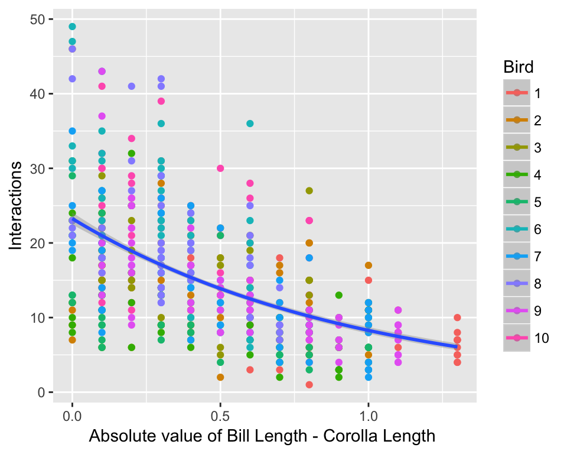

Trait-matching simulation
Ben Weinstein
Simulation
Process Model
- 10 hummingbird species
- 10 resource species
- Range of hummingbird bill sizes (in mm) ~ Pois(10)/10
- Range of corolla sizes (in mm) ~ Pois(15)/10
- Mean frequency (\(\lambda\)) for each hummingbird is drawn from U(0,10)
- Trait matching (minimizing Bill-Corolla difference) is drawn from a hierarcichal distribution
\[ log(\lambda)<-\alpha_i + \beta_i * |Trait_i - Trait_j\] \[ \alpha=N(3,0.2) \] \[\beta1 = N(-1,0.2)\]
Observation Model
Imperfect detection
\[ \omega_i = U(0.1,0.9) \]
- 10 camera
- 3 days per camera
View simulated strength and form of trait matching
Simulation Parameters
#Number of consumer species
h_species=10
plant_species=10
cameras<-5
days<-3
#Bill sizes
Bill<-rpois(h_species,10)
#Corolla sizes
Corolla<-rpois(plant_species,15)
#Subtract both and take absolute value, convert cm
traitmatch<-abs(sapply(Corolla,function(x) x - Bill)/10)
#regression slopes
#traits
beta1_mu<- -1
#abundance
#species variance in slopes
beta1_sigma<- 0.2
#Species alpha_mu
alpha_mu<- 3
alpha_sigma<- 0.2
#Poisson overdipersion
tauE<-10
#species level
detection= inv.logit(rnorm(h_species,0,1.67))
beta1<-rnorm(h_species,beta1_mu,beta1_sigma)
alpha<-rnorm(h_species,alpha_mu,alpha_sigma)Compute true interaction matrices
#for each species loop through and create a replicate dataframe
obs<-array(dim=c(h_species,plant_species,cameras,days))
lambda<-array(dim=c(h_species,plant_species,cameras))
N<-array(dim=c(h_species,plant_species,cameras))
#create intensities
for(x in 1:h_species){
for (y in 1:plant_species){
for (z in 1:cameras){
lambda[x,y,z]<-exp(alpha[x] + beta1[x] * traitmatch[x,y] + rnorm(1,0,1/sqrt(tauE)))
}
}
}
#draw latent states
for(x in 1:h_species){
for (y in 1:plant_species){
for (z in 1:cameras){
# true latent count
N[x,y,z]<-rpois(1,lambda[x,y,z])
}
}
}
#Observed counts in each day
for(x in 1:h_species){
for (y in 1:plant_species){
for (z in 1:cameras){
for (d in 1:days){
#true detection rate of that observed count
obs[x,y,z,d]<-rbinom(1,N[x,y,z],p=detection[x])
}
}
}
}View correlation in simulated latent state
mdat<-melt(N)
colnames(mdat)<-c("Bird","Plant","Camera","Interactions")
traitmelt<-melt(traitmatch)
colnames(traitmelt)<-c("Bird","Plant","traitmatch")
mdat<-merge(mdat,traitmelt,c("Bird","Plant"))
ggplot(mdat,aes(x=traitmatch,y=Interactions,col=as.factor(Bird))) + geom_point() + geom_smooth(aes(group=1),method="glm",method.args = list(family = "poisson")) + labs(col="Bird") + xlab("Absolute value of Bill Length - Corolla Length ")
View Detection Rates
obs.state<-melt(obs)
colnames(obs.state)<-c("Bird","Plant","Camera","Day","Yobs")
obs.state<-merge(mdat,obs.state,by=c("Bird","Plant","Camera"))
ggplot(obs.state,aes(x=Interactions,y=Yobs,col=Camera)) + geom_point() + theme_bw() + geom_abline() + coord_equal()